Code 18 -- Meter -- Time Signatures -- parameter structure |
P1 code number (18)
P2 staff number
P3 horizontal position
P4 vertical position
P5 top meter number
P6 bottom meter number
P7 size factor
P8 top number for second meter
P9
bottom number for second meter
P10 horizontal position of + between
meters
P11
space
between meters
P12 suppress + between meters
P13 change font
P14 ignore meter in Lineup/Justify
P15 horizontal displacement
P16 reduce PostScript pixel thickness
P25
P26
P5 top meter number
P6 bottom meter number
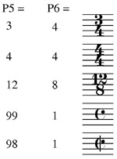
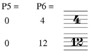
= top number
minus 1
= top number plus 1 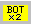
P7 size factor
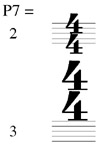
Note: if you plan to extract parts from a SCORE that employs oversize time signatures above the staff, SCORE will automatically return the time signature to its normal size and position (P4 = 0, P7 = 0). Since SCORE looks at the bottom staff (staff no. 1) to see if there are any time signatures, it is recommended that you attach these time signatures to staff one.
P8 indicates the top meter number for a second meter.
P9 indicates the bottom meter number for a second meter.
Parameters 8 and 9 are used to create complex time signatures,
such as 3/4 + 7/8.
Note that you can create meters such as 4+3/4 by setting P9 to 0. SCORE automatically adds the plus (+) between the meters.
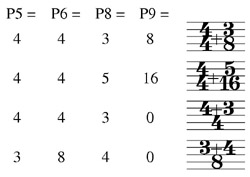
Toolbar buttons:
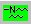 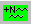
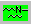 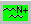
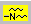 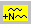
= bottom
right number
/2
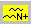
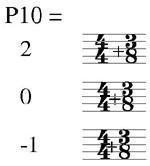
P10 alters the horizontal position of the plus (and the right meter, as well).
Toolbar buttons:
= move + and 2nd meter to right = move + and 2nd meter to left
P11 alters the distance between the right meter and the plus. 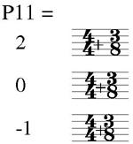
Toolbar buttons:
= move 2nd meter only to right = move 2nd meter only to left
= double meters in normal position
P12 suppresses the plus (+) between double meters.
Set P12 to 1 to remove the plus. This is sometimes used in conjunction with P11.
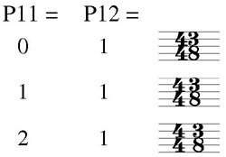
Toolbar
buttons:
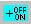
P13 changes the font of the meter numbers.
Add 1000 to the conventional font numbers (see Code
16) to use different fonts in a time signature.
P14
Toolbar buttons:
= turn off justifying (P14=1) = restore justifying (P14=0)
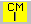 = center on nearest note/rest (CN)
= center on nearest note/rest (CN)
P15 horizontal displacement
P15 may be used when creating large time signatures above the staff. Setting P15 to a negative value shifts the time signature to the left (without changing its P3 setting). Some people prefer the meters centered over the barline when they are oversize
(see the CM command
above). 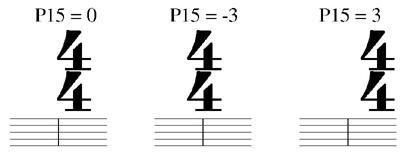
Toolbar buttons:
 = offset .5
to left
= offset .5
to left  = offset .5 to right
= offset .5 to right  = zero offset
= zero offset
P16 you may reduce the outline thickness of the meter numbers by 1, 2, or 3 pixels. This will improve the appearance of the numbers in orchestral scores with very small staff sizes. This applies only to PostScript printing.
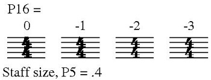
Toolbar buttons:
= reduce PostScript pixel thickness
P25 layer number.
See Color Control.
P26 color/gray value.
See Color Control.
Letter Commands
>>> Offsets
OFM = offset minus, moves item .5 step to left. (P15)
OFP = offset plus, moves item .5 step to right.
NOF = no offset of item -- P15 = 0.
Function Key Setup for Code 18
| F1 Help |
F2 Back to Previous Item |
F3 Forward to Next Item |
F4 Back to Previous Item, Same Code # |
F5 Forward to Next Item, Same Code # |
F6 . . . |
| F7 |
F8 Center |
F9 Exit from Edit Mode ( X ) |
F10 . . . |
F11 Delete, Move to Previous, Same Code # |
F12 Delete, Move to Next, Same Code # |